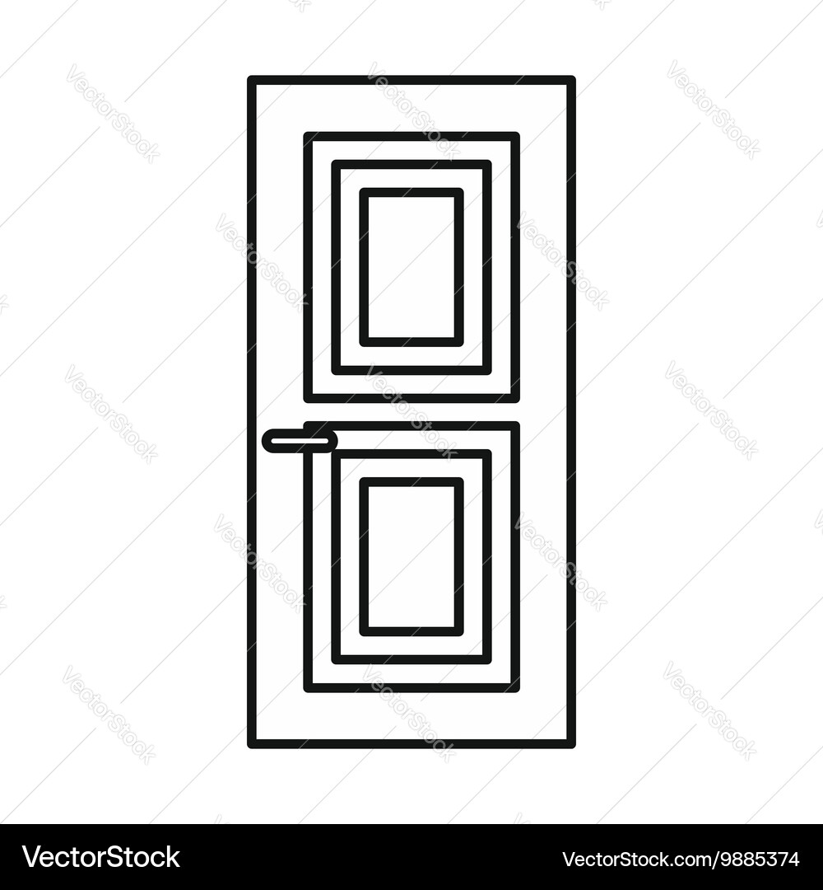

This is the Path of Truth.
They say it leads to wealth.
It certainly puts everything else into question.

Behind this door, the Path begins.This is GENESIS, the first step of the Path of Truth.

Behind this door, the Path begins.